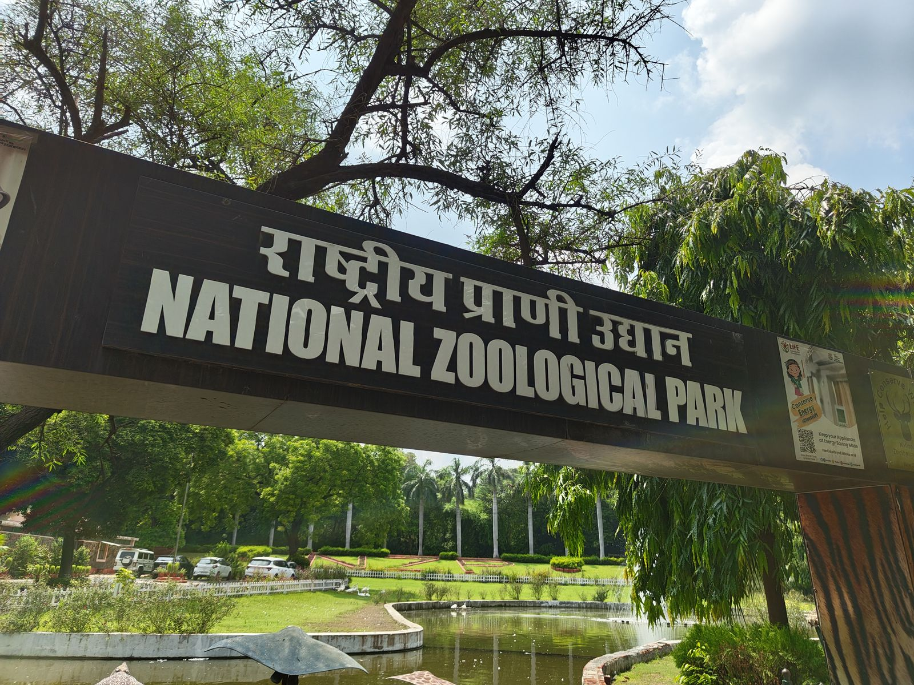
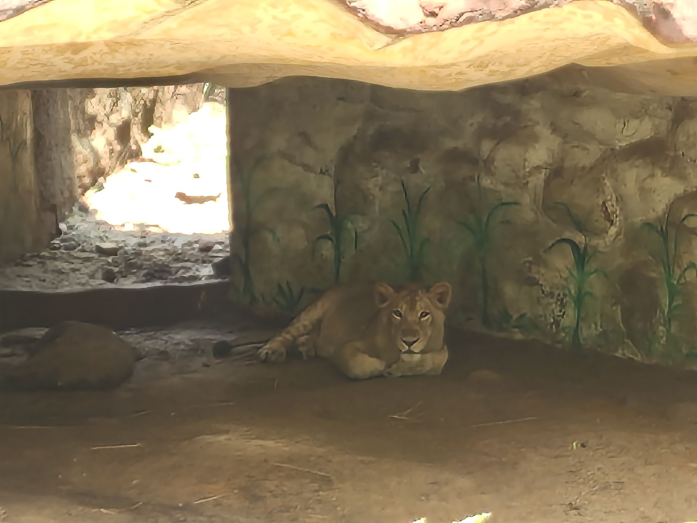
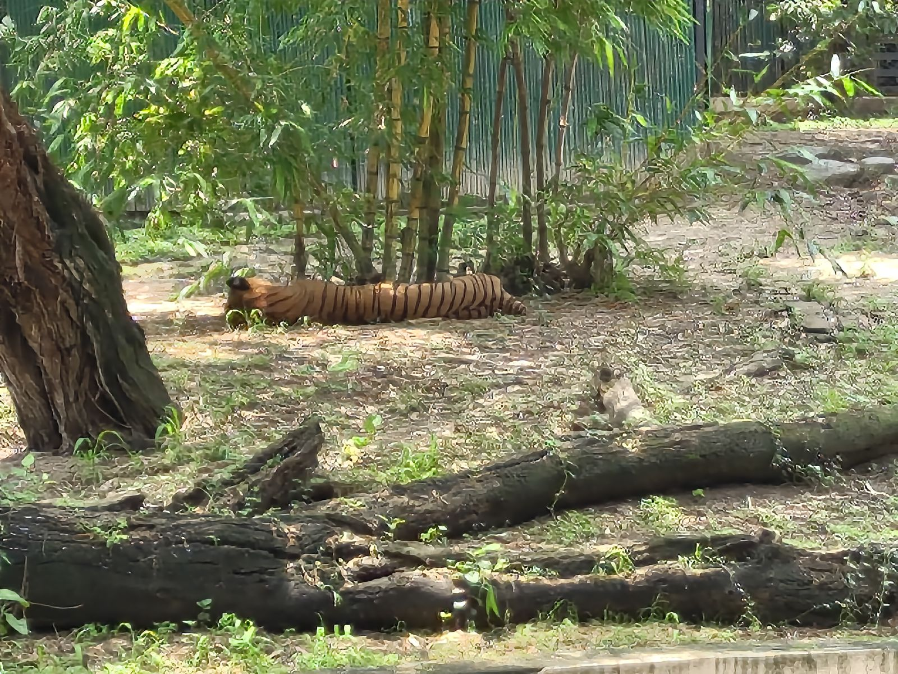
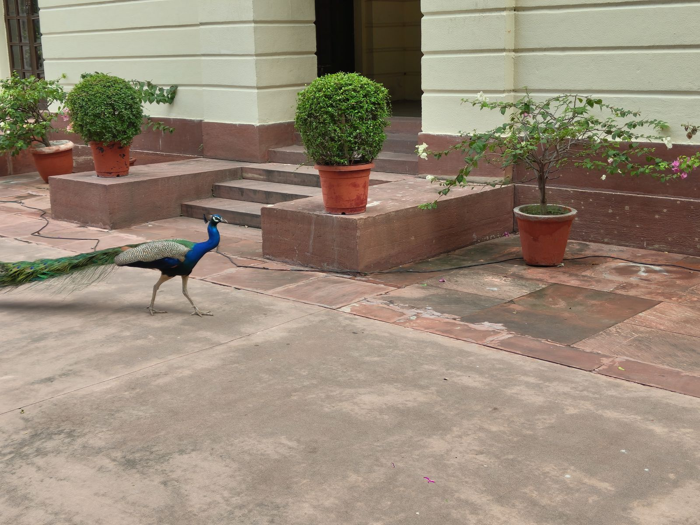
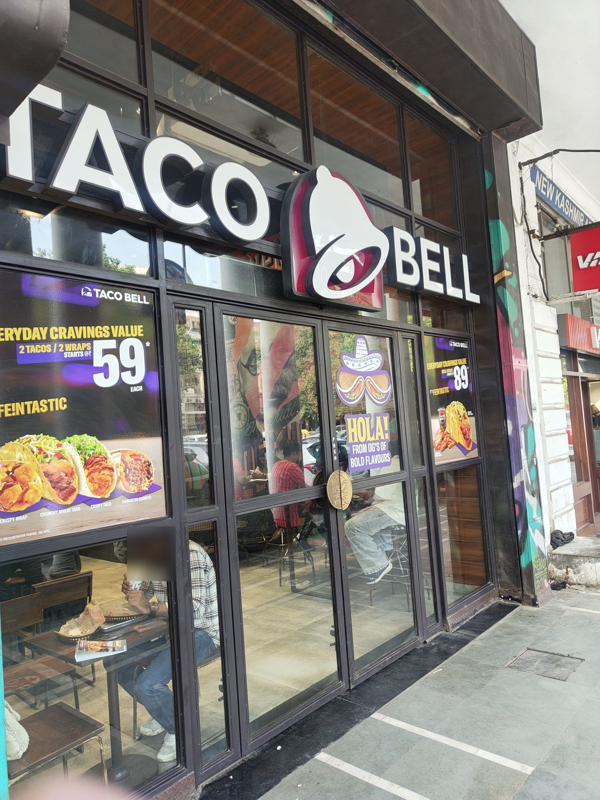
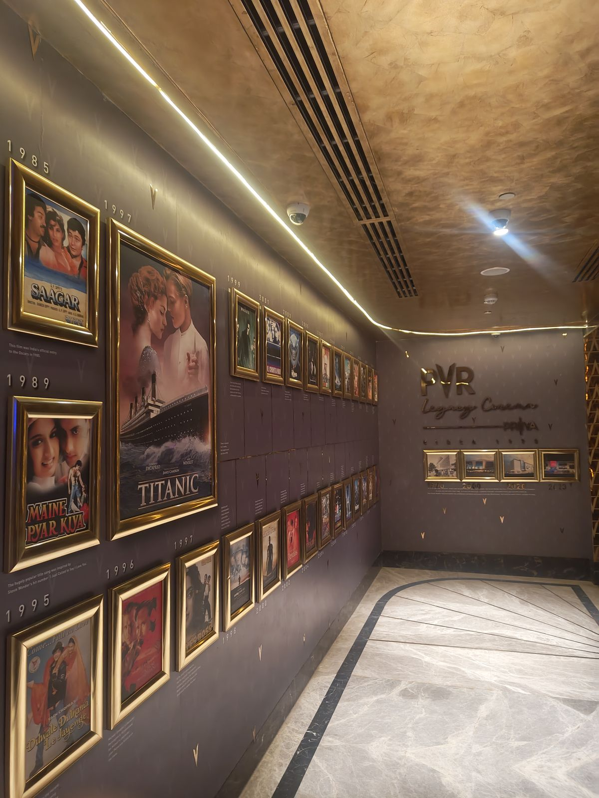
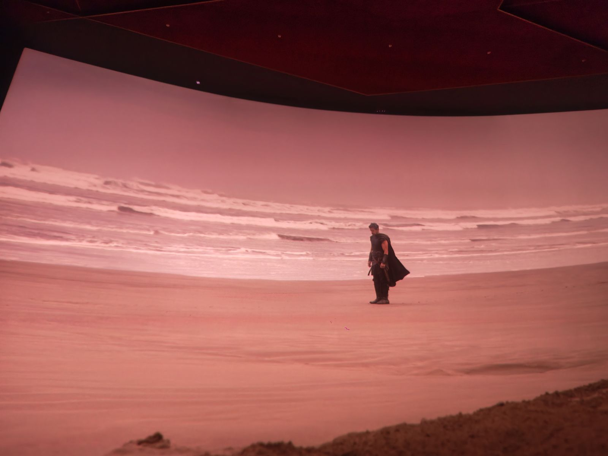

3 to 9 August 2026The week I was told I was going to Delhi
PUBLISHED 28 AUGUST 2026
I got the early ride back from Chandigarh on Monday morning and logged into my shift half asleep. Monday is reports day, so half asleep is not ideal, but it was survivable.
Later that day my mum told me that my sister and I were going to Delhi.
Who, me? No. Why? Do I have to?
Okay, I will go.
Tuesday was work. A new report, some broken ones, and a fair amount of doomscrolling in between. I asked my manager for the leave and got it. Wednesday was a Wednesday. I booked the tickets for Thursday and packed a bag.
Thursday
I was anxious about it all morning and I still cannot fully explain why. Delhi intimidates me. It is not a story about anything that happened there, it is just a thing that is true about me, and it means I do not go unless somebody sends me.
The train, though. The Vande Bharat is the best way to get anywhere in this country and I will not be taking questions.
We got in around half six in the evening and took a cab to my bua's place, and it was during that cab ride that I understood I had picked a bad week to come. Rain and Delhi do not mix and the road was showing it. We reached at eight.
Here is the part I have been enjoying telling people. My bua had no idea we were coming. None at all.
We rang the bell and she opened the door and just stood there. She has been asking us to visit for years and every time we have said soon. We even spoke to her on the phone while we were waiting for the car to the station, and she said come and visit sometime, and I said soon.
My cousins knew, because I needed the address from somebody. So they came home from work later that evening entirely unsurprised, which felt like a waste of a good arrival.
We caught up and went to bed.
Friday
Nothing happened. That is what an unannounced visit gets you: everybody else still has a job.
I was wrecked from the travel so I slept most of the day and talked to my bua for the rest of it. Then in the evening the cousins got back, we had dinner, and somebody said we should go for a night drive.
We drove to India Gate, then to CP, and both were shut. Independence Day was coming and the whole area was closed off with not even the lighting on. So we went to McDonald's and got a burger instead, and at half twelve at night the place was full. We got a table by luck.
I spent the entire meal thinking about Burger King.
Saturday
I have looked at Saturday from every angle and there is nothing in it. Both my cousins were at work. I slept through most of the day while my sister worked through a K-drama and single-handedly ruined my Netflix recommendations, a job she is still doing.
In the evening my bua took my sister and me to a namkeen shop.
I am not going to tell you where it is. My bua has been buying from that place for longer than I have been paying attention, everything is made there, and they do their own version of kurkure. I came home with a bag of about six different things. That is the most local thing that happened in two weeks and it is staying between us.
Sunday
I woke up on Monday with a blister on my right little toe, and that is the fairest summary of Sunday I can give you.
We had made a vague plan the night before. By ten we were in the car heading for the zoo.

I do not know exactly why I love going to zoos. It might be that I grew up on Nat Geo and Discovery and Animal Planet. It might be that my house has forest on three sides, so animals are a normal category of thing to me rather than an exotic one. Either way I will walk a zoo all day and not complain, and I did.

One thing that helped more than I expected: an app called NZP Sathi. Live location with the zoo map over the top, so you can actually plan a route instead of wandering. Delhi zoo is big enough that this matters.

The tiger looked thin. I noticed it at the time and I have thought about it since. I am not qualified to say anything past that and I am not going to pretend I am, but I saw it and it is going in.
We were done by one. Somewhere in the middle of all that walking we booked tickets for the three o'clock show at Nehru Planetarium.
The phone
We got there at half one, ate a paneer patty, and had time to spare, so we went into the Prime Minister's Museum next door.

There are peacocks in Delhi. Everywhere. I saw them all over the city that fortnight and I still do not know why nobody mentions it.
Inside the museum, one of my cousins said, where is my phone.
Then, a second later, it is in the car.
The BookMyShow tickets were on that phone.
We did not think much about it. Get to the parking by ten to three, get the phone, get to the show. We made the parking on time.
The phone was not in the car.
Then the panic arrived. We rang it and it rang back, somewhere, not loud enough to place. A minute in I told him to log into his Google account on my phone and open Find My Device.
It put the phone inside the museum reception. Two hundred metres back the way we had come, with five minutes on the clock.
He ran.
He had left it at the reception desk on the way in, where it had been sitting the entire time, perfectly safe, while we searched a car park.
We were three or four minutes late. I do not think we missed anything.
The show was good. Our seats were bad, because we booked at the last minute, but seventy rupees is seventy rupees and I would spend it again.
Taco Bell, CP

I had been craving Taco Bell for weeks, so we drove to CP and barely found parking.
If I ranked every Taco Bell I have been to, this one would come last, and I am going to say why rather than leave you to trust me.
The food was fine. Taco Bell is Taco Bell and the kitchen did nothing wrong. But the tables were not cleaned properly, the washrooms were bad, and the air conditioning on the upper floor was not working. It is loud, and it is dusty in places, and for a restaurant sitting in the middle of Connaught Place I expected considerably better.
Order the takeaway and eat it in your car.
The four hours
After we ate, my older cousin and my sister went home with the car, leaving the rest of us to fend for ourselves. My other cousin and I had tickets for The Odyssey that evening and about four hours to kill.
So, obviously, bowling.
We went out to Ambience in Vasant Kunj on the metro, and what our two enormous brains had failed to account for was that it was a Sunday, at Ambience. Every lane was booked until half nine.
Fine. Food court instead. Also Sunday. Not a single free seat.
So we ended up in Social, where I had a Red Bull. I want to note that the last time I wrote about Social I was there until one in the morning, and this time I sat in one and drank a Red Bull. Then we did some window shopping, and then we sat in Ambience's Taco Bell and ordered fries and a Coke, which means I visited two Taco Bells in one day and only complained about one of them.
The Odyssey

PVR Vasant Vihar has one of the best IMAX screens in the country, or so I had been told. It is.
I usually say the best experience is the one you are having with your friends and the venue barely matters. I am revising that. Watching The Odyssey on that screen was worth the trip on its own.

We came out at quarter past eleven. It is one of the better cinemas I have been in and I left it a review on Google, which is where all of this started for me and still where most of it happens.
We ordered a La Pino'z in the cab, ate it at home, and I slept.
The token
I want to go back to the metro for a minute, because riding it that Sunday brought something back.
Ten or eleven years ago the whole family came to Delhi. The metro still used tokens then, the little blue plastic ones you tapped at the gate and dropped into the slot on the way out.
My cousin and I were teenagers and we decided we wanted to keep one.
At no point did it occur to either of us to simply buy an extra ticket. What we did instead was put one token in the gate and go through together on it, so the other one stayed in a pocket. It worked. I hid it in my shoe.
Then we tried it again for his.
The CRPF spotted us immediately. We got a proper telling off, of the specific kind you get when you are young enough that everyone can see you are an idiot rather than a criminal, and they made us put the token back.
They did not know about the one in my shoe.

That is it in the photograph. I have had it for a decade. We still bring it up.
Seven days of Delhi still to go. Next week →